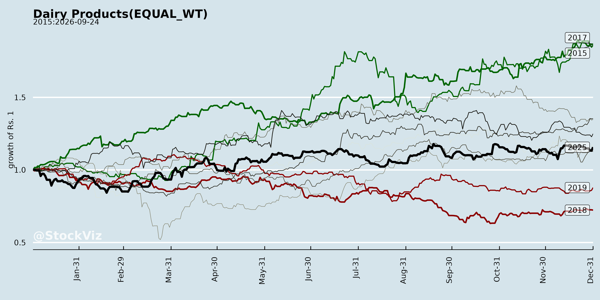
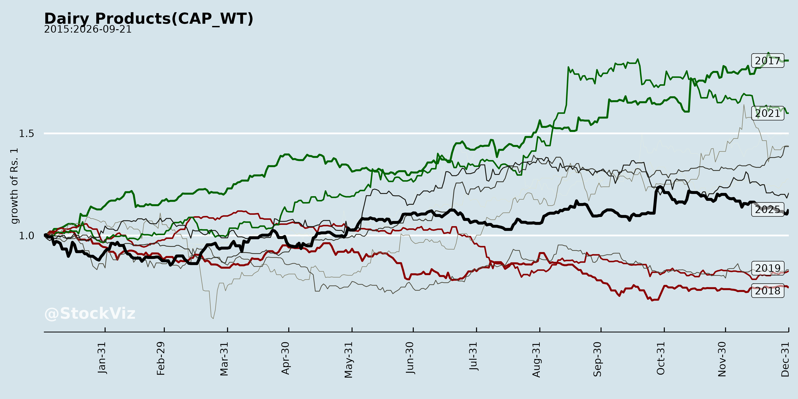
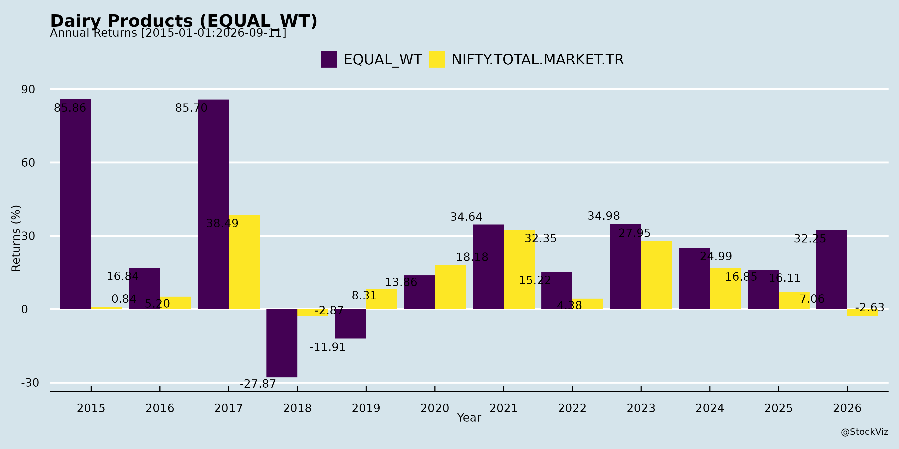
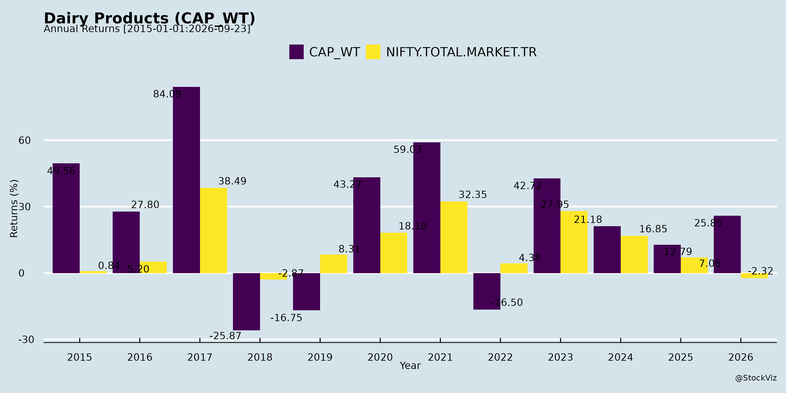
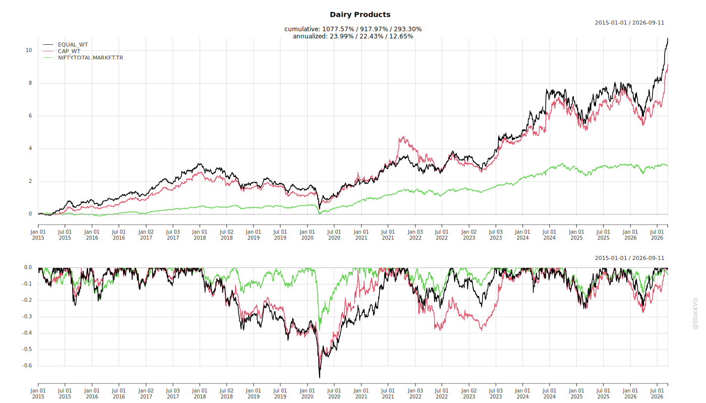
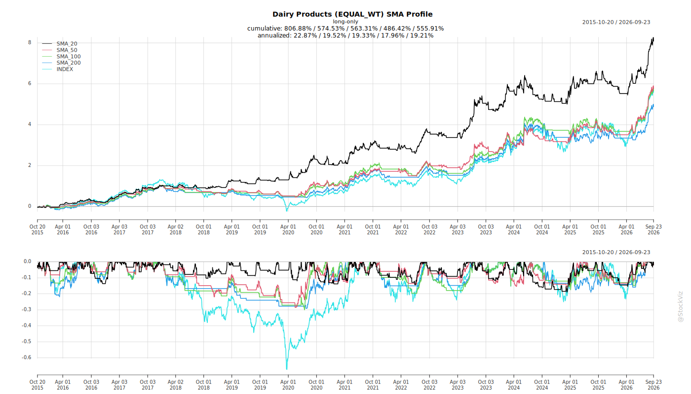
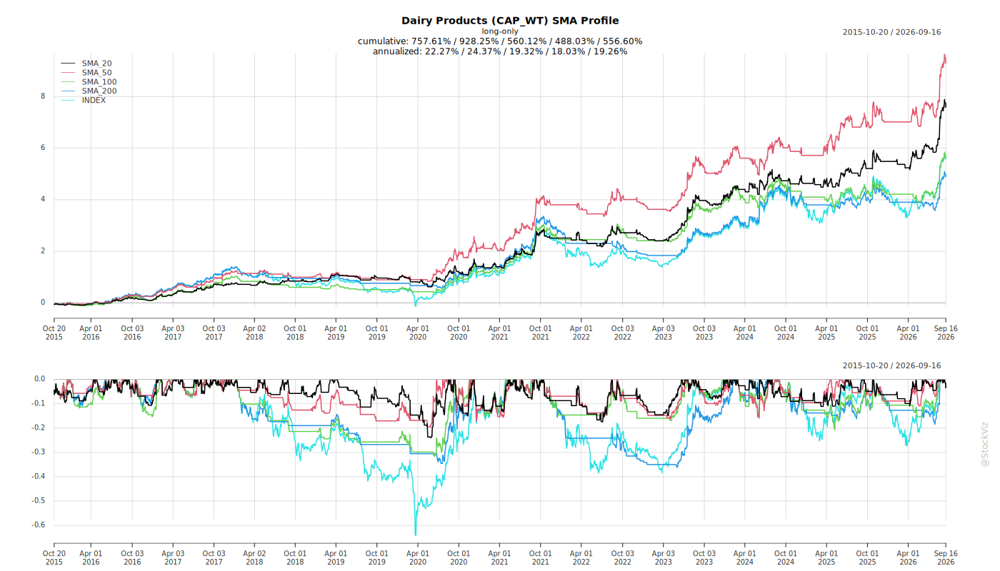
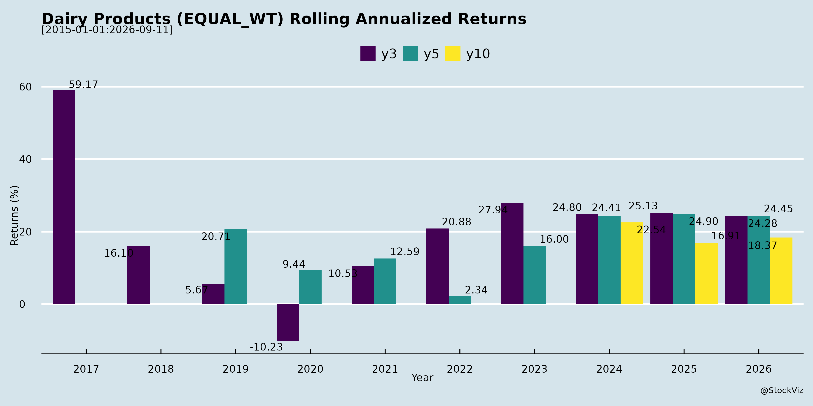
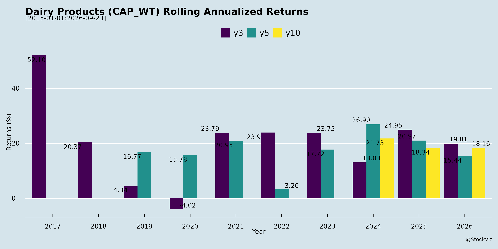

asof: 2025-11-27
Summary Analysis of Indian Dairy Products Sector
Based on the provided transcripts from Q2 FY26 earnings calls and announcements of key players (Dodla Dairy, Hatsun Agro Product Ltd - HAPL, Parag Milk Foods, with limited insights from Heritage Foods), the Indian dairy sector exhibits robust fundamentals amid premiumization and formalization trends. However, it faces near-term volatility from input costs and weather. Below is a structured analysis of headwinds, tailwinds, growth prospects, and key risks.
Headwinds (Near-Term Pressures)
Tailwinds (Supportive Factors)
Growth Prospects (Medium-Term Outlook: 3-5 Years)
| Company | Q2 FY26 Revenue Growth (YoY) | Key Growth Driver |
|---|---|---|
| Dodla | +2.1% (INR 1,019 cr) | Volumes + VAP mix |
| Parag | +16% (INR 1,008 cr) | Core + New-age |
| HAPL | (Interview; FY outlook +20%) | GST + Capex |
Key Risks
Overall Outlook: Bullish medium-term (15-20% CAGR feasible) on formalization, GST, premiumization, and protein trends, but H2 FY26 cautious due to costs/weather. Peers demonstrate resilience (stable margins, debt cuts), positioning sector for 2H recovery. Investors should monitor Q3 procurement trends.
asof: 2025-11-27
Indian Dairy Products Sector Analysis
Based on provided documents from key players (Dodla Dairy, Hatsun Agro Product - HAP, Heritage Foods, Parag Milk Foods, Vadilal Industries).
Tailwinds (Positive Factors)
Headwinds (Challenges)
Growth Prospects
Key Risks
Summary: Bullish sector tailwinds from VAP/protein trends, infra/brands (HAP exemplar), ESG (Dodla). Growth >10% feasible for leaders, but risks from regulation (Heritage), competition, and perishability demand strong execution. Parag/Vadilal docs more procedural, less insightful. Overall positive, with organized players gaining share.
asof: 2025-11-27
Indian Dairy Products Sector Analysis
Based on Q2 FY26 Earnings Transcripts/Announcements from Dodla Dairy, Hatsun Agro (HAPL), Heritage Foods (limited data), and Parag Milk Foods.
The Indian dairy sector exhibits resilient growth amid procurement headwinds, bolstered by GST reforms, premiumization, and value-added products (VAP). Companies reported healthy volumes (10-14% YoY) and revenue milestones (e.g., Dodla/Parag crossing ₹1,000 Cr quarterly), but margins face cost pressures. Key themes: formalization (organized share ~30%), protein/health nutrition boom, and geographic expansions.
Headwinds
Tailwinds
Growth Prospects
| Segment | Key Highlights | Outlook |
|---|---|---|
| Liquid Milk | Dodla: +12.6% vol (13.1L LPD); Parag stable share. | 6-8% revenue (Dodla India standalone); farm-to-home (Parag Pride of Cows +79% YoY, 8 cities). |
| VAP (Core: Ghee/Cheese/Paneer/Curd) | Dodla: +22% ex-bulk; Parag: +14% vol/+23% value (59% revenue). Market shares: Parag ghee 22%, cheese 35%. | Double-digit; GST aids paneer/curd (Dodla curd ₹194 Cr). Forward integration (Parag sweets/chikki). |
| New Age/Protein | Parag Avvatar: 6x H1 growth (9% revenue); wafer bars launched. Dodla Orgafeed: +28% revenue. | 20% portfolio share (Parag 3-4 yrs); protein deficiency (80% Indians) drives 20%+ CAGR. |
| Overall | Q2 revenue: Dodla +2% (₹1,019 Cr, 13% L2L); Parag +16% (₹1,008 Cr). H1: +6-14%. Africa (Dodla +22% revenue). | 20% topline (HAPL); ₹10,000 Cr vision (Parag 3-5 yrs); 4-5% per capita + formalization. Margins: 8-10% H2 (Dodla), low-teens medium-term (Parag). |
Key Risks
Overall Summary: Bullish medium-term (10-20% growth via VAP/protein, GST tailwind, formalization), but near-term cautious (H2 procurement pressures cap margins at 8-10%). Sector poised for ₹10,000 Cr+ players (e.g., Parag vision); focus on procurement scale, VAP mix (target 60%+), and efficiencies to mitigate risks. Debt-free/cash-rich balance sheets aid resilience.
asof: 2025-11-27
Indian Dairy Products Sector Analysis (Based on Q2/H1 FY26 Updates from Dodla Dairy, Heritage Foods, Parag Milk Foods, and Vadilal Industries)
Tailwinds (Positive Drivers)
Headwinds (Challenges)
Growth Prospects
Key Risks
Overall Summary: Q2 FY26 reflects resilient sector performance with modest revenue growth (2-16% YoY) but strong gross margins and volume tailwinds, driven by VAP/premium shifts. Headwinds from input inflation are offset by efficiencies/deleveraging, positioning for 10-15%+ growth via GST, festivities, and professionalization. Risks center on volatility, but fundamentals (procurement scale, brand equity) support optimistic outlook.
Copyright © 2023 SAS Data Analytics Pvt. Ltd. All rights reserved.